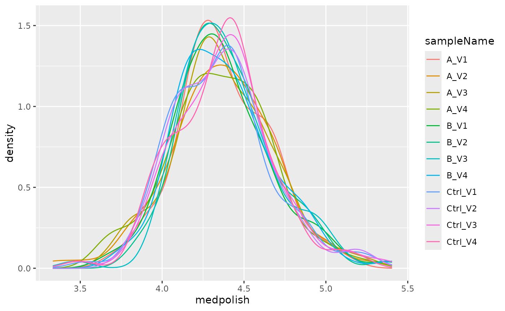
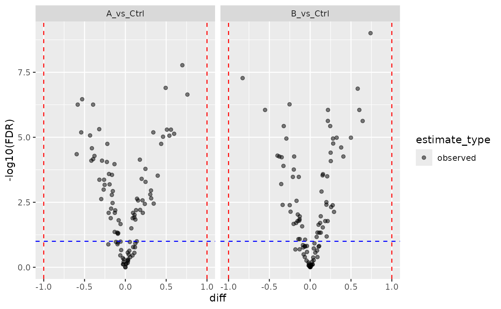

Introduction to prolfqua
Witold E. Wolski
Functional Genomics Center Zurich (FGCZ), ETH Zurich and University of ZurichChristian Panse
Functional Genomics Center Zurich (FGCZ), ETH Zurich and University of ZurichSource:
vignettes/prolfqua.Rmd
prolfqua.RmdIntroduction
prolfqua covers the steps of a label-free quantification (LFQ) proteomics analysis: quality control, normalization, aggregation of peptides to proteins, modelling, hypothesis testing and sample size estimation (Wolski et al. 2022).
The package works with data in long format, one row per measured feature (protein, peptide, precursor) and sample. Three building blocks carry an analysis:
-
AnalysisConfigurationmaps the columns of the table to their roles: the feature hierarchy (protein, peptide, …), the explanatory factors, the sample and the intensity column. -
LFQDataholds the data together with its configuration. Its methods return helpers for transformation (get_Transformer()), aggregation (get_Aggregator()), summary statistics (get_Stats()), missing-value summaries (get_Summariser()) and plots (get_Plotter()). -
build_contrast_analysis()fits a model per protein and computes the requested contrasts. Themethodargument selects the model: linear models (lm,rlm,rfit), limma and limma-voom, DEqMS variance moderation, Firth logistic regression for presence/absence, mixed models and ROPECA on peptide-level data, and variants that impute groups without observations at the limit of detection.
Every method returns an object with the same interface:
get_contrasts(), get_Plotter(),
get_missing() and to_wide(). Results of
different methods therefore have the same columns and can be compared or
combined directly.
Installation
Install prolfqua from Bioconductor with:
if (!requireNamespace("BiocManager", quietly = TRUE)) {
install.packages("BiocManager")
}
BiocManager::install("prolfqua")The development version is available on GitHub:
BiocManager::install("fgcz/prolfqua")Quick start
We simulate peptide-level intensities for 100 proteins measured in
three groups (A, B and Ctrl).
sim_lfq_data_peptide_config() returns the data together
with a matching AnalysisConfiguration.
library(prolfqua)
istar <- sim_lfq_data_peptide_config(Nprot = 100, seed = 1234)
lfqdata <- LFQData$new(istar$data, istar$config)
lfqdata$factors() |> head()
#> # A tibble: 6 × 3
#> sample sampleName group_
#> <chr> <chr> <chr>
#> 1 A_V1 A_V1 A
#> 2 A_V2 A_V2 A
#> 3 A_V3 A_V3 A
#> 4 A_V4 A_V4 A
#> 5 B_V1 B_V1 B
#> 6 B_V2 B_V2 BWe transform the intensities, scale them robustly, and aggregate the peptides to proteins with Tukey’s median polish.
lfqdata <- lfqdata$get_Transformer()$log2()$robscale()$lfq
lfqprot <- lfqdata$get_Aggregator()$aggregate()
lfqprot$get_Plotter()$intensity_distribution_density()
Distribution of the normalized protein intensities per sample.
We compare groups A and B with the control
group, using limma’s moderated linear model.
contrasts <- c(
"A_vs_Ctrl" = "group_A - group_Ctrl",
"B_vs_Ctrl" = "group_B - group_Ctrl"
)
fa <- build_contrast_analysis(lfqprot, "~ group_", contrasts, method = "limma")
res <- fa$get_contrasts()
head(res[, c("protein_Id", "contrast", "diff", "p.value", "FDR")])
#> # A tibble: 6 × 5
#> protein_Id contrast diff p.value FDR
#> <chr> <chr> <dbl> <dbl> <dbl>
#> 1 0EfVhX~3967 A_vs_Ctrl 0.199 0.000123 0.000397
#> 2 0m5WN4~6025 A_vs_Ctrl 0.178 0.0000160 0.0000726
#> 3 0YSKpy~2865 A_vs_Ctrl -0.175 0.00277 0.00554
#> 4 3QLHfm~8938 A_vs_Ctrl 0.214 0.00456 0.00807
#> 5 3QYop0~7543 A_vs_Ctrl -0.221 0.00000298 0.0000179
#> 6 76k03k~7094 A_vs_Ctrl -0.0822 0.00980 0.0156
fa$get_Plotter()$volcano()$FDR
Volcano plot of the two contrasts.
All available methods are listed by list_facades():
names(list_facades())
#> [1] "binomial_firth_nested" "binomial_nested" "deqms"
#> [4] "deqms_voom" "firth" "firth_nested"
#> [7] "hurdle_nested" "limma" "limma_impute"
#> [10] "limma_voom" "limma_voom_impute" "limpa"
#> [13] "limpa_nested" "lm" "lm_impute"
#> [16] "lmer_nested" "rfit" "rfit_impute"
#> [19] "rlm" "ropeca_nested"Further documentation
The package website https://fgcz.github.io/prolfqua/ holds the full set of tutorials:
- Comparing two groups: QC, normalization, linear models and moderated contrasts
-
Creating
configurations: reading your own data into an
AnalysisConfiguration - QC and sample size estimation
-
Contrast
facades with parallel designs: all
build_contrast_analysis()methods side by side - Contrast facades with a two-factor design
- Modelling a dataset with two factors
- Contrasts from factors
- Limma backend
- DEqMS count-dependent variance moderation
- Using limpa
- Simulating peptide-level data
- Imputing data at the limit of detection
The vignettes Comparing two groups with prolfqua and All modelling methods at a glance are also part of this package.
Session info
sessionInfo()
#> R version 4.5.2 (2025-10-31)
#> Platform: x86_64-pc-linux-gnu
#> Running under: Ubuntu 24.04.5 LTS
#>
#> Matrix products: default
#> BLAS: /usr/lib/x86_64-linux-gnu/openblas-pthread/libblas.so.3
#> LAPACK: /usr/lib/x86_64-linux-gnu/openblas-pthread/libopenblasp-r0.3.26.so; LAPACK version 3.12.0
#>
#> locale:
#> [1] LC_CTYPE=C.UTF-8 LC_NUMERIC=C LC_TIME=C.UTF-8
#> [4] LC_COLLATE=C.UTF-8 LC_MONETARY=C.UTF-8 LC_MESSAGES=C.UTF-8
#> [7] LC_PAPER=C.UTF-8 LC_NAME=C LC_ADDRESS=C
#> [10] LC_TELEPHONE=C LC_MEASUREMENT=C.UTF-8 LC_IDENTIFICATION=C
#>
#> time zone: UTC
#> tzcode source: system (glibc)
#>
#> attached base packages:
#> [1] stats graphics grDevices utils datasets methods base
#>
#> other attached packages:
#> [1] prolfqua_1.9.0 BiocStyle_2.38.0
#>
#> loaded via a namespace (and not attached):
#> [1] Rdpack_2.6.6 gridExtra_2.3.1 rlang_1.3.0
#> [4] magrittr_2.0.5 clue_0.3-68 GetoptLong_1.1.1
#> [7] otel_0.2.0 matrixStats_1.5.0 compiler_4.5.2
#> [10] mgcv_1.9-3 png_0.1-9 systemfonts_1.3.2
#> [13] vctrs_0.7.3 pkgconfig_2.0.3 shape_1.4.6.1
#> [16] crayon_1.5.3 fastmap_1.2.0 backports_1.5.1
#> [19] labeling_0.4.3 utf8_1.2.6 promises_1.5.0
#> [22] rmarkdown_2.32 nloptr_2.2.1 ragg_1.5.2
#> [25] UpSetR_1.4.1 purrr_1.2.2 xfun_0.62
#> [28] glmnet_5.2 jomo_2.7-6 logistf_1.26.1
#> [31] cachem_1.1.0 jsonlite_2.0.0 progress_1.2.3
#> [34] later_1.4.8 pan_2.0 prettyunits_1.2.0
#> [37] broom_1.0.13 parallel_4.5.2 cluster_2.1.8.1
#> [40] R6_2.6.1 stringi_1.8.9 bslib_0.12.0
#> [43] RColorBrewer_1.1-3 limma_3.66.0 boot_1.3-32
#> [46] rpart_4.1.24 jquerylib_0.1.4 Rcpp_1.1.2
#> [49] bookdown_0.48 iterators_1.0.14 knitr_1.52
#> [52] IRanges_2.44.0 httpuv_1.6.17 Matrix_1.7-4
#> [55] splines_4.5.2 nnet_7.3-20 tidyselect_1.2.1
#> [58] yaml_2.3.12 doParallel_1.0.17 codetools_0.2-20
#> [61] lattice_0.22-7 tibble_3.3.1 plyr_1.8.9
#> [64] shiny_1.14.0 withr_3.0.3 S7_0.2.2
#> [67] evaluate_1.0.5 desc_1.4.3 survival_3.8-3
#> [70] circlize_0.4.18 pillar_1.11.1 BiocManager_1.30.27
#> [73] mice_3.19.0 foreach_1.5.2 stats4_4.5.2
#> [76] reformulas_0.4.4 plotly_4.12.1 generics_0.1.4
#> [79] hms_1.1.4 S4Vectors_0.48.1 ggplot2_4.0.3
#> [82] scales_1.4.0 minqa_1.2.8 xtable_1.8-8
#> [85] glue_1.8.1 tools_4.5.2 data.table_1.18.6.1
#> [88] lme4_2.1-0 forcats_1.0.1 fs_2.1.0
#> [91] grid_4.5.2 tidyr_1.3.2 crosstalk_1.2.2
#> [94] rbibutils_2.4.1 colorspace_2.1-4 nlme_3.1-168
#> [97] formula.tools_1.7.1 cli_3.6.6 textshaping_1.0.5
#> [100] viridisLite_0.4.3 ComplexHeatmap_2.26.1 dplyr_1.2.1
#> [103] gtable_0.3.6 sass_0.4.10 digest_0.6.39
#> [106] operator.tools_1.6.3.1 BiocGenerics_0.56.0 ggrepel_0.9.8
#> [109] rjson_0.2.23 htmlwidgets_1.6.4 farver_2.1.2
#> [112] htmltools_0.5.9 pkgdown_2.2.1 lifecycle_1.0.5
#> [115] httr_1.4.9 mime_0.13 GlobalOptions_0.1.4
#> [118] mitml_0.4-5 statmod_1.5.2 MASS_7.3-65